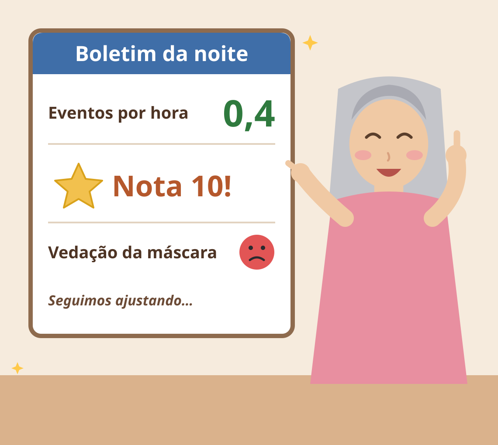

Noite mais recente · Dia 15
Nota 10 nos eventos, carinha vermelha na máscara
O aparelho me deu boletim de manhã: eventos lá embaixo, mas a vedação levou carinha brava. Ou seja, respirei muito bem, só deixei um pouco de ar fugir pelo caminho.
Ler esta noite